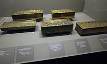
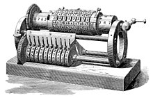

History of Calculator
The first known tools used to aid arithmetic calculations were: bones
(used to tally items), pebbles, and counting boards, and the abacus,
known to have been used by Sumerians and Egyptians before 2000 BC.

Link Picture: History of Calculator Documentary
Except for the Antikythera mechanism (an "out of the time" astronomical device), development of computing tools arrived near the start of the 17th century: the geometric-military compass (by Galileo), logarithms and Napier bones (by Napier), and the slide rule (by Edmund Gunter).[1] 17th century mechanical calculators The Renaissance saw the invention of the mechanical calculator by Wilhelm Schickard in 1623,[9] and later by Blaise Pascal in 1642.[10] A device that was at times somewhat over-promoted as being able to perform all 17th century mechanical calculators
A calculator is a device or tool used for performing mathematical calculations. It can range from simple handheld devices with basic arithmetic functions to complex scientific or graphing calculators capable of performing advanced mathematical operations. Calculators can be physical devices, software applications on computers or mobile devices, or even built into web browsers. They are widely used in various fields such as education, engineering, finance, and everyday life for tasks ranging from basic arithmetic to complex scientific computations.
The Grant mechanical calculating machine, 1877
The 18th century saw the arrival of some notable improvements, first by Poleni with the first fully functional calculating clock and four-operation machine, but these machines were almost always one of a kind. Luigi Torchi invented the first direct multiplication machine in 1834: this was also the second key-driven machine in the world, following that of James White (1822).
If you need an illustration of the accelerating speed of technological change, look no further than the electronic calculator, that modest little device that does the most complex sum instantly and that you hold in the palm of your hand.
Calculation beginnings: The mechanical age
In the very beginning, of course, was the abacus, a sort of hand-operated mechanical calculator using beads on rods, first used by Sumerians and Egyptians around 2000 BC.
The principle was simple, a frame holding a series of rods, with ten sliding beads on each. When all the beads had been slid across the first rod, it was time to move one across on the next, showing the number of tens, and thence to the next rod, showing hundreds, and so on (with the ten beads on the initial row returned to the original position).
It made addition and subtraction faster and less error-prone and may have led to the term 'bean counters' for accountants.
But that was where the technology more or less stuck for the next 3,600 years, until the beginning of the 17th century AD, when the first mechanical calculators began to appear in Europe. Most notably, the development of logarithms by John Napier allowed Edward Gunter, William Oughtred and others to develop the slide rule.
The slide rule is basically a sliding stick (or discs) that uses logarithmic scales to allow rapid multiplication and division. Slide rules evolved to allow advanced trigonometry and logarithms, exponentials and square roots.
Even up to the 1980s, knowing how to operate a slide rule was a basic part of mathematics education for millions of schoolchildren, even though by that time, mechanical and electric calculating machines were well established. The problem was that these weren't portable while the slide rule fitted into the breast pocket of your button-down shirt.
Real Rocket Scientists used slide rules to send Man to the Moon - a Pickett model N600-ES was taken on the Apollo 13 moon mission in 1970.
Gears, wheels and buttons
The first mechanical calculator appeared in 1642, the creation of French intellectual and mathematics whizz kid Blaise Pascal as "a device that will eventually perform all four arithmetic operations without relying on human intelligence."
Pascal's machine used geared wheels and could add and subtract two numbers directly and multiply and divide by repetition. Gottfried Leibniz then spent the best part of his life designing a four-operation mechanical calculator, based on his ingenious slotted 'Leibniz wheel,' but ultimately failing to produce a fully operational machine.
That had to wait until 1820 and the patenting in France of Thomas de Colmar's four function Arithmometer.

The Thomas Arithmometer Arithometer. Photo credit: The University of North Carolina
This first commercially viable counting machine was manufactured from 1851 to 1915 and copied by around 20 companies across Europe. If you want to see it working, here's a video...
By then, the main tide of innovation had moved across the Atlantic, with the development of hand cranked adding machines like the Grant Mechanical Calculating Machine of 1877 and, more famously the P100 Burroughs Adding Machine developed by William Seward Burroughs in 1886.
This was the first in a line of office calculating machines that made the Burroughs family fortune and enabled the son, William S. Burroughs, to pursue a career consuming hallucinogenic drugs and writing subversive novels like 'The Naked Lunch'.
A further step forward occurred in 1887 when Dorr. E. Felt's US-patented key driven 'Comptometer' took calculating into the push button age. This machine, too, spurred a host of imitators.
The Curta calculator, which first appeared in 1948, was perhaps the ultimate expression of the mechanical calculator, so compact that it could, somewhat lumpily, fit into a pocket and was capable of addition, subtraction, multiplication and division.
Valve and tube calculators
Electronic calculating for the office had to wait on the miniaturisation of valves and the development of solid-state transistors.
The first step was seen in 1961 with the arrival of ANITA (A New Inspiration To Arithmetic/Accounting). This was the world's first all-electronic desktop calculator and it was developed in Britain by Control Systems Ltd., marketed under its Bell Punch and Sumlock brands.
ANITA: First desktop all-electronic calculator. Useful for working out your business margins
ANITA used the same push button key layout as the company's mechanical calculators, but these were the only moving parts. All of the switching was done by semiconductor diodes and cold-cathode, gas-filled valves - two Decatrons and myriad thyratrons.
The illuminated 12-place display was provided by 'Nixie' glow discharge tubes. From 1962, two models were marketed; ANITA Mk. 7 for continental Europe and the Mk. 8 for Britain and the rest of the world, with the latter soon becoming the only model. These early ANITAs sold for around £355 ($1,000), equivalent to around £4,800 ($8,000) in today's money.
Nevertheless, as the only electronic desktop calculator available, tens of thousands of ANITAs were sold worldwide up to 1964, when three new transistorised competitors appeared; the American Friden 130 series, the Italian IME 84, and the Sharp Compet CS10A from Japan.